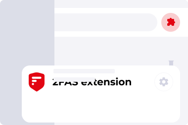
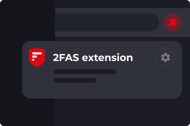

<!--

  This file is part of the 2FAS Browser Extension (https://github.com/twofas/2fas-browser-extension)
  Copyright © 2023 Two Factor Authentication Service, Inc.
  Contributed by Grzegorz Zając. All rights reserved.

  This program is free software: you can redistribute it and/or modify
  it under the terms of the GNU General Public License as published by
  the Free Software Foundation, either version 3 of the License, or
  any later version.

  This program is distributed in the hope that it will be useful,
  but WITHOUT ANY WARRANTY; without even the implied warranty of
  MERCHANTABILITY or FITNESS FOR A PARTICULAR PURPOSE. See the
  GNU General Public License for more details.

  You should have received a copy of the GNU General Public License
  along with this program. If not, see <https://www.gnu.org/licenses/>

-->
<div class="twofas-options-page-pin-info hidden">
  <div class="twofas-options-page-pin-info-box">
    
    

    <p class="twofas-options-page-pin-info-box-header" data-i18n="optionsPinHeader">Pin 2FAS for faster authentication</p>
    <p class="twofas-options-page-pin-info-box-subheader" data-i18n="optionsPinDesc">Check Extension List to make it visible.</p>

    <button class="btn btn-theme btn-got-it js-twofas-pin-info-got-it" data-i18n="gotIt">Got it</button>
  </div>
</div>